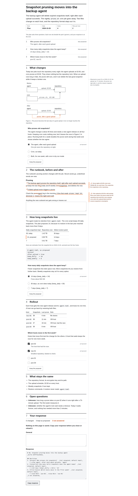

What changed
- The page declares both schemes.
color-scheme: light darkreplaceslight, so the browser's own controls and scrollbars follow the reader too. - Colours come from tokens. Eleven hex values in the page styles became tokens, and the kit sets each token for both schemes.
- Screenshots keep their colours. An image inside the page looks the same in both schemes. Known gaps has the one place where that reads badly.
Desktop
At 1440×900 the page keeps its outer column for notes in both schemes, and the column rule stays visible on the dark ground. Switch the scheme to compare, and open a capture to see the whole page.
Scheme

9c41e07. The whole page is 5,105 px tall.
9c41e07. Also 5,105 px tall, so the dark scheme moves nothing.Phone
At 390×844 the first screen holds the title, the lede, the title block and the three questions in both schemes. The captures are at pixel ratio 2. Zoom opens each at its actual size, 390 px wide, so the text reads as it does on a phone.

9c41e07.
9c41e07.Before and after
The change a reader sees, on a phone with the system set to dark. Before, the page ignored the setting and stayed white. After, it follows it.
Nothing else on the screen moves. Every line breaks at the same word in both captures.
Before
After
9c41e07.Measurements
Heights come from the four captures. Contrast is the WCAG ratio of each text colour on its ground, from the token values.
Body text loses a little contrast in dark and stays far above the 4.5:1 floor. Secondary and accent text gain.
| Measure | Before | After |
|---|---|---|
| Height, 390 light | 6,163 px | 6,163 px |
| Height, 390 dark | 6,163 px | 6,163 px |
| Height, 1440 dark | 5,105 px | 5,105 px |
| Ground, dark changed | #fff | #0f1113 |
| Body text, dark | 18.5:1 | 15.7:1 |
| Secondary text, dark | 9.7:1 | 11.0:1 |
| Accent text, dark | 5.8:1 | 8.1:1 |
Code
The page styles had their own colours. Each one now reads a token, and the tokens carry both schemes, so the page needs no colour query of its own.
The diff is three files and 41 lines. This excerpt is the part that decides the colours, and color-scheme is the line that lets the browser follow the reader.
pages/page.css lines 1-10 at 9c41e07:root {
color-scheme: light;
color-scheme: light dark;
}
.title-block {
background: #fff;
background: var(--plans-panel);
border-color: #ccc;
border-color: var(--plans-rule);
}Known gaps
- partial Screenshots inside a page stay light, so a light capture on a dark page glares. The page can't recolour an image, and the author can add a dark capture beside it.
- unknown How the page prints. Browsers print in light by default, but nobody has printed this page.
- unknown Forced colours, such as Windows high contrast. Nobody has looked at the page in that mode.
- unknown Browsers other than Chromium. Every capture on this page is from Chromium.